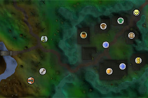
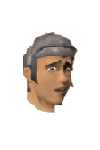
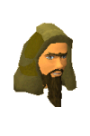
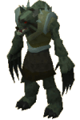

Canifis (Members)
Warning | Introduction | Location | Points of Interest | Personalities | Quests | Creatures of the Night | Miscellaneous
Warning
In order to access Canifis, and the rest of Morytania, you must have completed the Priest in Peril quest.
As the citizens of Canifis are prone to transforming into werewolves when provoked, it is advised that you wield the Wolfbane Dagger (given to you by Drezel at the end of Priest in Peril) before attacking them. If you have lost your Wolfbane Dagger, you will need to return to Drezel, who will give it back to you. Of course, if you are confident of your skills and want some higher-level opposition, feel free to use whatever weapon you like.
Introduction

Though Canifis now lies on the border with Misthalin, many years ago the lands of Morytania extended much further west. It was only by an extreme effort, and the aid of Saradomin himself, that the humans managed to push the werewolves, vampires and other dire inhabitants of Morytania back to the east bank of the River Salve.
Location

To the north-east is Fenkenstrain's Castle, where the deranged doctor conducts his experiments.
Far to the east, across the Haunted Woods, is the decidedly ghostly Port Phasmatys, where the dead walk and talk as though they were alive.
South of Canifis are Mort Myre Swamp and the Hallows. These are two of the most miserable places in RuneScape, where even the boldest adventurer must beware of the horrific ghasts and their lust for the warmth of the living. Ghasts are the trapped souls of those who have starved in the swamps, so they are good at rotting any food you may have in your inventory.
You can get to Canifis by a large number of means, including the fairy rings, portals in your house and Ancient Magicks.
Points of Interest

For those seeking to have hides tanned, Sbott is an excellent worker. Like all shopkeepers of Canifis, though, his isolation has driven prices up. It is worth noting that the taxidermist has taken up residence in Canifis, and will carefully preserve the heads of your more challenging foes.
The local brew, available from the Hair of the Dog Inn is called 'Moonlight Mead', and isn't noted for its flavour (unless you consider an awful taste noteworthy).
On the road leaving town to the north-east is Mazchna, the Slayer Master. Mazchna is a strange creature, but sells Slayer equipment and provides assignments, so it's worth overlooking his appearance.
Personalities

Roavar, as the proprieter of the town's only inn and its largest building, is fully acquainted with everyone in town as well as general gossip about the town and the nation of Morytania itself. As werewolves go, he's remarkably friendly; then again, he might just be sizing you up to hand over to Lord Drakan, ruler of Morytania.
|

Ulizius is one of few humans anywhere near Canifis, which probably explains his jumpiness. He guards the gate that leads south into Mort Myre Swamp. It may be that he hopes to either protect people from the ghasts beyond, or that he hopes to starve the ghasts of their favourite food. |
|
| Roavar never leaves his bar. | Ulizius is always at the gate to Mort Myre Swamp, just south-west of Canifis. |
|

Vanstrom is a strange figure in Canifis. He sits in the Hair of the Dog listening to news and waiting to meet the right adventurer - one who can help him achieve his goals, whatever they may be.
|

Malak is without doubt the most vile creature in Canifis. As a vampire he is a creature of evil, but as a manipulative and cruel master over his domain he is doubly wicked. The only good thing about this undead monstrosity is that you always know where you stand (far, far beneath his aristocratic sensibility).
|
|
| Vanstrom Klause can be found sitting by the stairs in the Hair of the Dog. | Malak stands by the door of the Hair of the Dog, waiting to speak to Roavar. |
Quests
The following quests can be started in Canifis:
- Creature of Fenkenstrain (Members)
- In Search of the Myreque (Members)
Creatures of the Night

Something in their werewolf blood makes the people of Canifis particularly hardy and especially vicious. Unlike the citizens of the towns of Misthalin and Asgarnia, these people are more than capable of holding their own in a fight against a careless adventurer. Of course, a careless adventurer is more likely to awake something inside them, something much more bloodthirsty and violent.
|

Ghouls are the savage remnants of a society that fell, many centuries ago, into eating their dead. In modern times they are a rare species, but can be relied upon to be found near graveyards, where they dig up the bodies and feast on rotting flesh. They fight without weapons and tear at their enemies with malformed fingers.
|
|
| Men and women can be found throught the town of Canifis. | Ghouls can be found in the graveyard southwest of Canifis. |
|

Without the Wolfsbane Dagger, you risk facing one of these every time you venture into Canifis. Werewolves are fast, powerful, and utterly evil. If you're new to Canifis, it's probably best to avoid doing anything to anger the locals.
|
| Werewolves can be found anywhere there are men and women. |
Miscellaneous
- The locals will be more welcoming if you are wearing the Ring of Charos, which you can obtain towards the end of the Creature of Fenkenstrain quest, though they're still not aggressive without it.
- There is a pickled brain spawn point in the Hair of the Dog.
- Just east of town is the Werewolf Agility Course. Of course, you'll need the Ring of Charos to get in, as they don't like humans much at all.

More articles in
Cities and Towns
|
|